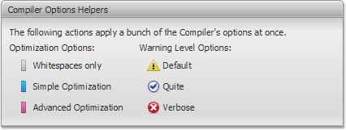
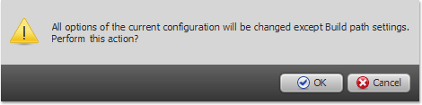

Whitespaces Only
The Whitespaces Only compilation level
minimizes your code by removing comments, line breaks,
unnecessary spaces, and other whitespace.
This
level does not check or rewrite your code, so the output
JavaScript is functionally identical to the source JavaScript.
This compilation level performs vary basic code compression.
Simple Optimizations
The Simple Optimizations compilation
level performs the same optimizations as Whitespaces
Only, but it also applies other optimizations such as renaming
local variables and function parameters to shorter names. This
compilation level makes code significantly smaller. Since only
arguments of functions and local variables are renamed, the
compiled JavaScript code does not interfere or conflict with
other JavaScript.
Explore the following reference
to learn which code optimizations are applied:
- Process Closure Primitives - processes goog.provide()
and goog.require() calls.
- Rename Local Variables only - renames local variables
and function parameters to shorter names.
- Folds Constants (e.g. (2 + 3) to 5)
- Coalesce Variable Names - merges two variables
together as one.
- Dead Assignment Elimination - removes assignments to
values that can not be referenced.
- Inline Local Functions - inlines functions defined in
local scopes.
- Inline Local Variables - inlines variables defined in
local scopes.
- Remove Dead Code - removes code that will never
execute.
- Remove Unused Local Variables - removes unused
variables in local scope.
- Collapse Variable Declarations - collapses multiple
variable declarations into one declaration.
- Convert to dotted properties - converts quoted
property accesses to dot syntax (a['b'] -> a.b).
- Optimize arguments array - provides formal names for
elements of arguments array.
Advanced Optimizations
The Advanced Optimizations compilation
level performs the same optimizations as Simple
Optimizations, but it also applies other optimizations such as
aggressive renaming, dead code removal and global inlining. This
compilation level provides the highest compression, but can
cause unexpected behaviors of your code. To be sure that the
compiled code will be valid and compatible with uncompiled code,
please explore the following articles.
Explore the following articles on
Closure Compiler website for more information:
Applying a Compilation
Level
- Go to the Basic tab on the
Compiler page.
- Find Compiler Options Helper
section. Click one of the Compilation Levels (Optimization
Options).
Use Whitespaces
Only to minimize the code only. Use Simple
Optimization for basic code checking and optimization.

- The confirmation dialog will appear. Notice that the
applying a Compilation Level will change all of the Compiler's
options except Build path settings. Click OK
to continue.

- The Compilation Level is applied.